Code for Machine Learning and Data Science II Unsupervised Learning
Table of Contents
These are the code snippets used in Unsupervised Learning
part of Machine Learning and Data Science II.
Introduction
The following is a custom package written to handle plotting and other functions required by the lecture.
import ChalcedonPy as cp # custom-pakcage for lecture materials and publications SAVE_PATH = "Unsupervised-Learning" # sets the default save path style="web" # sets the default rcParams stylce sheet
Clustering
Clustering is the task of identifying similar instances and assigning them to clusters, or groups of similar instances. However, unlike classification, clustering is an unsupervised task.
Let's make a plot comparing labelled and unlabelled plot of data.
import matplotlib.pyplot as plt from sklearn.datasets import load_iris data = load_iris() X = data.data y = data.target data.target_names
| FUNCTION | DEFINITION | MORE INFO |
| load_iris() | Load and return the iris dataset (classification). | Link |
The following code plots the aforementioned data.
plt.figure(figsize=(9, 3.5)) plt.subplot(121) plt.plot(X[y==0, 2], X[y==0, 3], "o", label="Iris setosa") plt.plot(X[y==1, 2], X[y==1, 3], "s", label="Iris versicolor") plt.plot(X[y==2, 2], X[y==2, 3], "^", label="Iris virginica") plt.xlabel("Petal length") plt.ylabel("Petal width") plt.legend() plt.subplot(122) plt.scatter(X[:, 2], X[:, 3], marker=".") plt.xlabel("Petal length") plt.tick_params(labelleft=False) plt.gca().set_axisbelow(True) cp.store_fig("Classification-vs-Clustering-plot", filepath = SAVE_PATH, style = style, close = True)
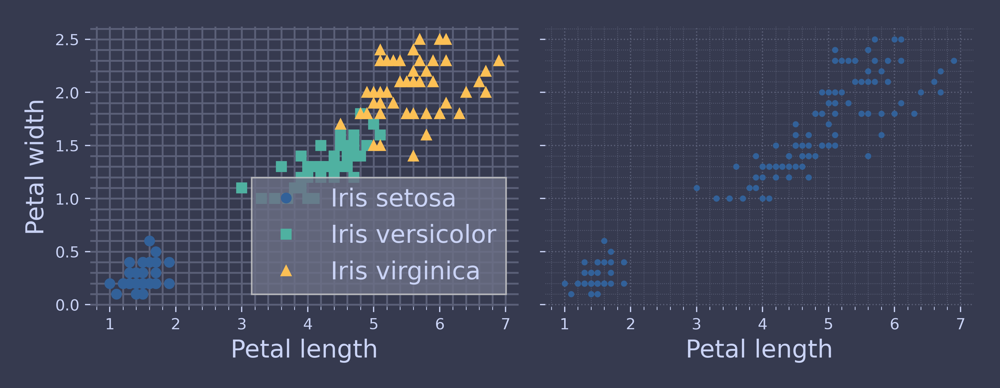
While on the right it is easy to separate, on the right you it is not possible, this is where clustering algorithms step in as many of them can easily detect the lower-left cluster.
NOTE: the following code shows how a Gaussian mixture model (explained at the end of this chapter) can actually separate these clusters pretty well using all 4 features:
- petal length & width,
- sepal length & width.
This code maps each cluster to a class. Instead of hard coding the mapping, the code picks the most common class for each cluster using the scipy.stats.mode() function:
import numpy as np from scipy import stats from sklearn.mixture import GaussianMixture y_pred = GaussianMixture(n_components=3, random_state=42).fit(X).predict(X) mapping = {} for class_id in np.unique(y): mode, _ = stats.mode(y_pred[y==class_id]) mapping[mode] = class_id y_pred = np.array([mapping[cluster_id] for cluster_id in y_pred])
| FUNCTION | DEFINITION | MORE INFO |
| GaussianMixture() | Representation of a Gaussian mixture model probability distribution. This class allows to estimate the parameters of a Gaussian mixture distribution. | Link |
plt.plot(X[y_pred==0, 2], X[y_pred==0, 3], "o", label="Cluster 1") plt.plot(X[y_pred==1, 2], X[y_pred==1, 3], "s", label="Cluster 2") plt.plot(X[y_pred==2, 2], X[y_pred==2, 3], "^", label="Cluster 3") plt.xlabel("Petal length") plt.ylabel("Petal width") plt.legend(loc="upper left") cp.store_fig("Classification-vs-Clustering-2-plot", filepath = SAVE_PATH, style = style, close = True)
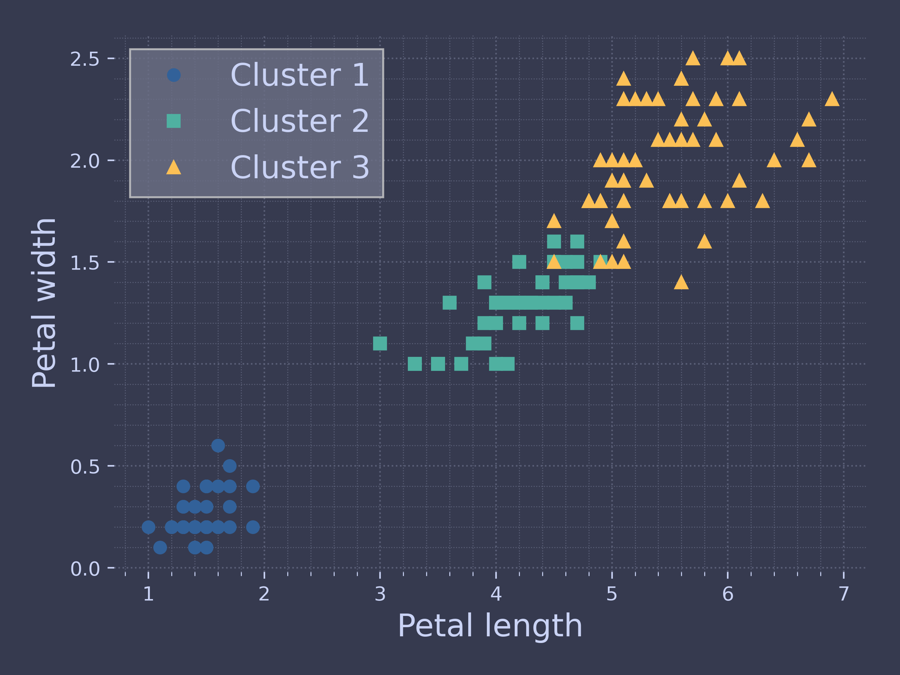
And the ratio of iris plants assigned to right cluster ?
(y_pred==y).sum() / len(y_pred)
0.9666666666666667
As can be seen for this plot the Gaussian mixture works really well. But don't worry about it now as we will have a look at it later.
K-Means
K means clustering, assigns data points to one of the K clusters depending on their distance from the centre of the clusters. It starts by randomly assigning the clusters centred in the space. Then each data point assign to one of the cluster based on its distance from centroid of the cluster. After assigning each point to one of the cluster, new cluster centroids are assigned.
This process iterative until it finds good cluster. In the analysis we assume that number of cluster is given in advanced and we have to put points in one of the group.
Fit & Predict
Let's create some unlabelled dataset.
from sklearn.cluster import KMeans from sklearn.datasets import make_blobs blob_centers = np.array([[ 0.2, 2.3], [-1.5 , 2.3], [-2.8, 1.8], [-2.8, 2.8], [-2.8, 1.3]]) blob_std = np.array([0.4, 0.3, 0.1, 0.1, 0.1]) X, y = make_blobs(n_samples=2000, centers=blob_centers, cluster_std=blob_std, random_state=7) k = 5 kmeans = KMeans(n_clusters=k, n_init=10, random_state=42) y_pred = kmeans.fit_predict(X)
| FUNCTION | DEFINITION | MORE INFO |
| KMeans() | K-Means clustering. | Link |
and plot it.
def plot_clusters(X, y=None): plt.scatter(X[:, 0], X[:, 1], c=y, s=1) plt.xlabel("$x_1$") plt.ylabel("$x_2$", rotation=0) plt.figure(figsize=(8, 4)) plot_clusters(X) plt.gca().set_axisbelow(True) cp.store_fig("blobs-plot", filepath = SAVE_PATH, style = style, close = True)
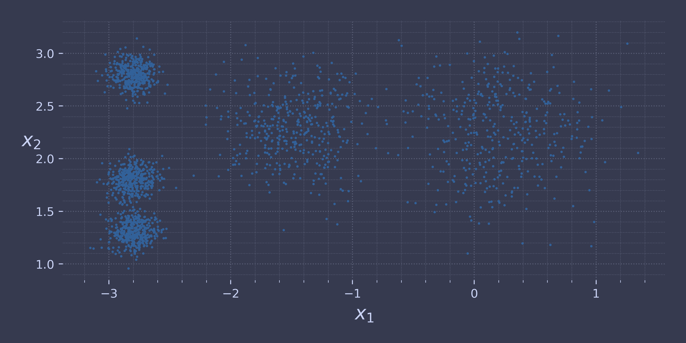
Each instance of the data is assigned to one of 5 k value.
print(y_pred)
[0 0 4 ... 3 1 0]
y_pred is kmeans.labels_
True
Let's look at the coordinates of the 5 centroids (i.e., cluster centres).
print(kmeans.cluster_centers_)
[[-2.80214068 1.55162671] [ 0.08703534 2.58438091] [-1.46869323 2.28214236] [-2.79290307 2.79641063] [ 0.31332823 1.96822352]]
print(kmeans.labels_)
[0 0 4 ... 3 1 0]
Of course, we can predict the labels of new instances:
import numpy as np X_new = np.array([[0, 2], [3, 2], [-3, 3], [-3, 2.5]]) print(kmeans.predict(X_new))
[4 4 3 3]
Decision Boundaries
Let's plot the model's decision boundaries. This gives us a Voronoi diagram.
def plot_data(X): plt.plot(X[:, 0], X[:, 1], 'k.', markersize=2) def plot_centroids(centroids, weights=None, circle_color='w', cross_color='k'): if weights is not None: centroids = centroids[weights > weights.max() / 10] plt.scatter(centroids[:, 0], centroids[:, 1], marker='o', s=35, linewidths=8, color=circle_color, zorder=10, alpha=0.9) plt.scatter(centroids[:, 0], centroids[:, 1], marker='x', s=2, linewidths=12, color=cross_color, zorder=11, alpha=1) def plot_decision_boundaries(clusterer, X, resolution=1000, show_centroids=True, show_xlabels=True, show_ylabels=True): mins = X.min(axis=0) - 0.1 maxs = X.max(axis=0) + 0.1 xx, yy = np.meshgrid(np.linspace(mins[0], maxs[0], resolution), np.linspace(mins[1], maxs[1], resolution)) Z = clusterer.predict(np.c_[xx.ravel(), yy.ravel()]) Z = Z.reshape(xx.shape) plt.contourf(Z, extent=(mins[0], maxs[0], mins[1], maxs[1]), cmap="Pastel2") plt.contour(Z, extent=(mins[0], maxs[0], mins[1], maxs[1]), linewidths=1, colors='k') plot_data(X) if show_centroids: plot_centroids(clusterer.cluster_centers_) if show_xlabels: plt.xlabel("$x_1$") else: plt.tick_params(labelbottom=False) if show_ylabels: plt.ylabel("$x_2$", rotation=0) else: plt.tick_params(labelleft=False) plt.figure(figsize=(8, 4)) plot_decision_boundaries(kmeans, X) cp.store_fig("voronoi-plot", filepath = SAVE_PATH, style = style, close = True)
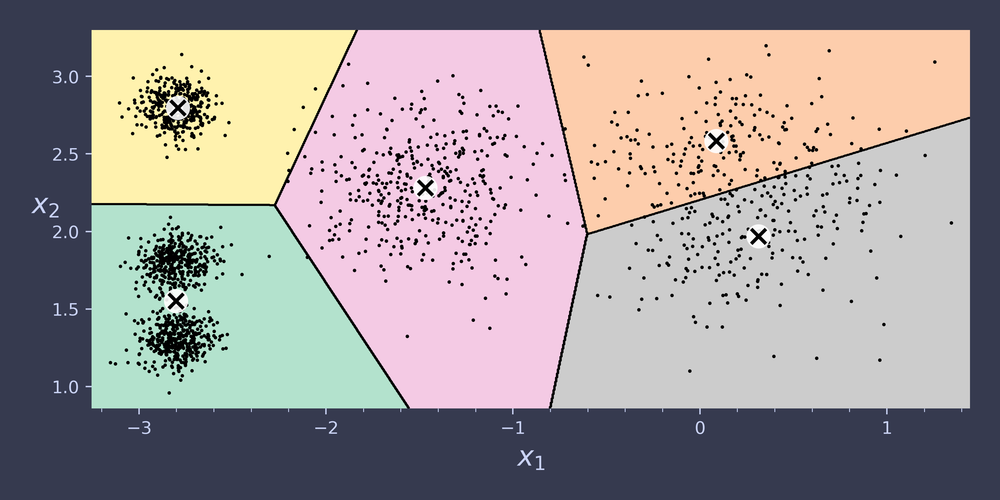
It seems some edge cases are assigned the wrong value (look at pink-yellow) but the algorithm seems to have clustered correctly.
Hard vs Soft Clustering
Instead of assigning each instance to a single cluster, which is called hard clustering, it can be useful to give each instance a score per cluster, which is called soft clustering.
The transform() allows the distance measure from each instance to every centroid.
print(kmeans.transform(X_new).round(2))
[[2.84 0.59 1.5 2.9 0.31] [5.82 2.97 4.48 5.85 2.69] [1.46 3.11 1.69 0.29 3.47] [0.97 3.09 1.55 0.36 3.36]]
print(np.linalg.norm(np.tile(X_new, (1, k)).reshape(-1, k, 2) - kmeans.cluster_centers_, axis=2).round(2))
| FUNCTION | DEFINITION | MORE INFO |
| numpy.linalg.norm() | This function is able to return one of eight different matrix norms, or one of an infinite number of vector norms (described below), depending on the value of the ord parameter. | Link |
[[2.84 0.59 1.5 2.9 0.31] [5.82 2.97 4.48 5.85 2.69] [1.46 3.11 1.69 0.29 3.47] [0.97 3.09 1.55 0.36 3.36]]
K-Means Algorithm
\(k\) means is one of the fastest clustering algorithms.
The algorithms steps are as follows:
- Initialise \(k\) centroids randomly (i.e., \(k\) distinct instances are randomly chosen from the dataset and the centroids are placed at their locations)
- Repeat until convergence, meaning until centroid location are established.
- Assign each instance to closest centroid.
- Update centroids to be the \(\mu\) of instances assigned.
For this use Kmeans() which uses an optimised initialisation technique by default.
kmeans_iter1 = KMeans(n_clusters=5, init="random", n_init=1, max_iter=1, random_state=5) kmeans_iter2 = KMeans(n_clusters=5, init="random", n_init=1, max_iter=2, random_state=5) kmeans_iter3 = KMeans(n_clusters=5, init="random", n_init=1, max_iter=6, random_state=5) kmeans_iter1.fit(X) kmeans_iter2.fit(X) kmeans_iter3.fit(X)
plt.figure(figsize=(10, 8)) plt.subplot(321) plot_data(X) plot_centroids(kmeans_iter1.cluster_centers_, circle_color='r', cross_color='w') plt.ylabel("$x_2$", rotation=0) plt.tick_params(labelbottom=False) plt.title("Update the centroids (initially randomly)") plt.subplot(322) plot_decision_boundaries(kmeans_iter1, X, show_xlabels=False, show_ylabels=False) plt.title("Label the instances") plt.subplot(323) plot_decision_boundaries(kmeans_iter1, X, show_centroids=False, show_xlabels=False) plot_centroids(kmeans_iter2.cluster_centers_) plt.subplot(324) plot_decision_boundaries(kmeans_iter2, X, show_xlabels=False, show_ylabels=False) plt.subplot(325) plot_decision_boundaries(kmeans_iter2, X, show_centroids=False) plot_centroids(kmeans_iter3.cluster_centers_) plt.subplot(326) plot_decision_boundaries(kmeans_iter3, X, show_ylabels=False) cp.store_fig("kmeans-algorithm-plot", filepath = SAVE_PATH, style = style, close = True)
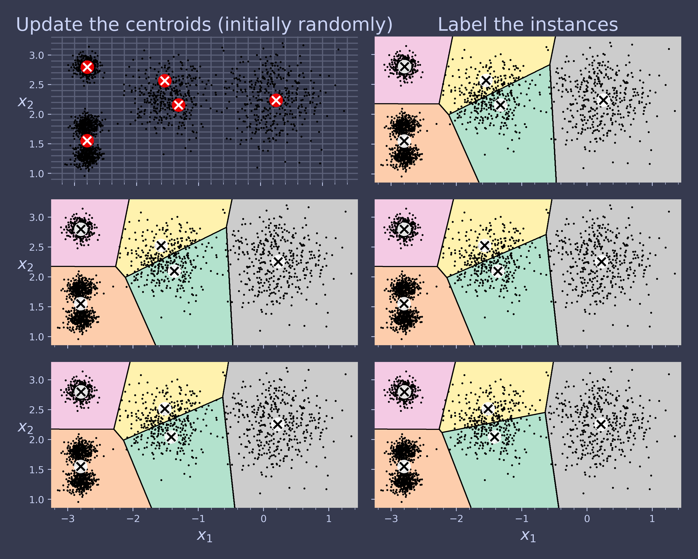
K-Means Variability
def plot_clusterer_comparison(clusterer1, clusterer2, X, title1=None, title2=None): clusterer1.fit(X) clusterer2.fit(X) plt.figure(figsize=(12, 5)) plt.subplot(121) plot_decision_boundaries(clusterer1, X) if title1: plt.title(title1) plt.subplot(122) plot_decision_boundaries(clusterer2, X, show_ylabels=False) if title2: plt.title(title2) kmeans_rnd_init1 = KMeans(n_clusters=5, init="random", n_init=1, random_state=2) kmeans_rnd_init2 = KMeans(n_clusters=5, init="random", n_init=1, random_state=9) plot_clusterer_comparison(kmeans_rnd_init1, kmeans_rnd_init2, X, "Solution 1", "Solution 2 (with a different random init)") cp.store_fig("kmeans-algorithm-2-plot", filepath = SAVE_PATH, style = style, close = True)
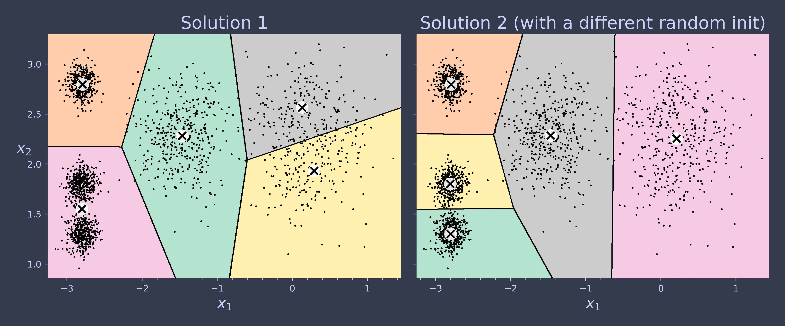
good_init = np.array([[-3, 3], [-3, 2], [-3, 1], [-1, 2], [0, 2]]) kmeans = KMeans(n_clusters=5, init=good_init, n_init=1, random_state=42) kmeans.fit(X)
We use inertia for figuring out which iteration is the best.
kmeans.inertia_
211.59853725816836
kmeans.score(X)
-211.5985372581684
Mini-Batch K-Means
Scikit-Learn also implements a variant of the K-Means algorithm that supports mini-batches.
from sklearn.cluster import MiniBatchKMeans minibatch_kmeans = MiniBatchKMeans(n_clusters=5, n_init=3, random_state=42) minibatch_kmeans.fit(X)
MiniBatchKMeans(n_clusters=5, n_init=3, random_state=42)
NOTE: : when n_init was not set when creating a MiniBatchKMeans estimator, I explicitly set it to ninit=3 to avoid a warning about the fact that the default value for this hyperparameter will change from 3 to "auto" in Scikit-Learn 1.4.
print(minibatch_kmeans.inertia_)
211.65899374574312
If the dataset does not fit in memory, the simplest option is to use the memmap class.
First load MNIST:
from sklearn.datasets import fetch_openml mnist = fetch_openml('mnist_784', as_frame=False, parser="auto")
Once loaded, split the dataset:
X_train, y_train = mnist.data[:60000], mnist.target[:60000] X_test, y_test = mnist.data[60000:], mnist.target[60000:]
Next, let's write the training set to a memmap:
filename = "my_mnist.mmap" X_memmap = np.memmap(filename, dtype='float32', mode='write', shape=X_train.shape) X_memmap[:] = X_train X_memmap.flush()
from sklearn.cluster import MiniBatchKMeans minibatch_kmeans = MiniBatchKMeans(n_clusters=10, batch_size=10, n_init=3, random_state=42) minibatch_kmeans.fit(X_memmap)
MiniBatchKMeans(batch_size=10, n_clusters=10, n_init=3, random_state=42)
from timeit import timeit max_k = 100 times = np.empty((max_k, 2)) inertias = np.empty((max_k, 2)) for k in range(1, max_k + 1): kmeans_ = KMeans(n_clusters=k, algorithm="lloyd", n_init=10, random_state=42) minibatch_kmeans = MiniBatchKMeans(n_clusters=k, n_init=10, random_state=42) print(f"\r{k}/{max_k}", end="") # \r returns to the start of line times[k - 1, 0] = timeit("kmeans_.fit(X)", number=10, globals=globals()) times[k - 1, 1] = timeit("minibatch_kmeans.fit(X)", number=10, globals=globals()) inertias[k - 1, 0] = kmeans_.inertia_ inertias[k - 1, 1] = minibatch_kmeans.inertia_ plt.figure(figsize=(10, 4)) plt.subplot(121) plt.plot(range(1, max_k + 1), inertias[:, 0], "--", label="K-Means") plt.plot(range(1, max_k + 1), inertias[:, 1], ".-", label="Mini-batch K-Means") plt.xlabel("$k$") plt.title("Inertia") plt.legend() plt.axis([1, max_k, 0, 100]) plt.grid() plt.subplot(122) plt.plot(range(1, max_k + 1), times[:, 0], "--", label="K-Means") plt.plot(range(1, max_k + 1), times[:, 1], ".-", label="Mini-batch K-Means") plt.xlabel("$k$") plt.title("Training time (seconds)") plt.axis([1, max_k, 0, 4]) cp.store_fig("minibatch-kmeans-vs-kmeans-plot", filepath = SAVE_PATH, style = style, close = True)
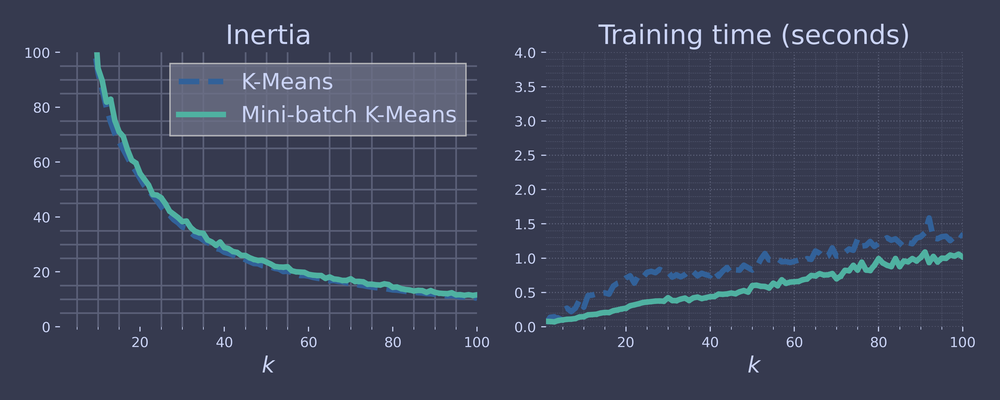
Finding the Optimal Cluster Number
Let's see what would the behaviour be if the cluster number is not 5 with one being lower (3) and one being higher (8).
kmeans_k3 = KMeans(n_clusters=3, n_init=10, random_state=42) kmeans_k8 = KMeans(n_clusters=8, n_init=10, random_state=42) plt.figure(figsize=(10, 4)) plot_clusterer_comparison(kmeans_k3, kmeans_k8, X, "$k=3$", "$k=8$") cp.store_fig("bad-cluster-plot", filepath = SAVE_PATH, style = style, close = True)
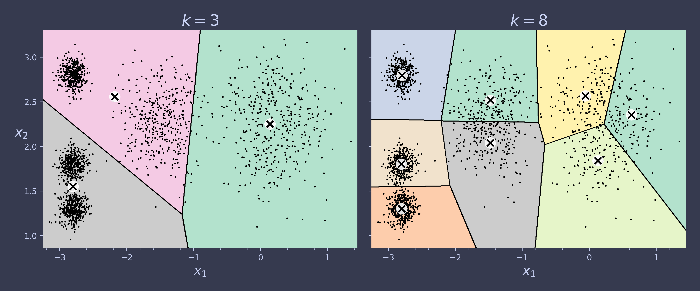
It seems lower one (k=3) has underestimated and the higher one (k=8) is over estimated. But what about their inertia values. Let's have a look at them.
kmeans_k3.inertia_
653.2167190021553
kmeans_k8.inertia_
119.22484592677122
It seems as we increase the \(k\) value, the inertia value gets higher, but as we see it does not necessarily get better. This is because as there are more clusters declared, on average, the instances will be closer to one, making the inertia lower.
To see this visually, let's plot it and see.
kmeans_per_k = [KMeans(n_clusters=k, n_init=10, random_state=42).fit(X) for k in range(1, 10)] inertias = [model.inertia_ for model in kmeans_per_k]
plt.figure(figsize=(8, 3.5)) plt.plot(range(1, 10), inertias, "o-") plt.xlabel("$k$") plt.ylabel("Inertia") plt.annotate("", xy=(4, inertias[3]), xytext=(4.45, 650), arrowprops=dict(facecolor='black', shrink=0.1)) plt.text(4.5, 650, "Elbow", horizontalalignment="center") plt.axis([1, 8.5, 0, 1300]) cp.store_fig("inertia-vs-k-plot", filepath = SAVE_PATH, style = style, close = True)
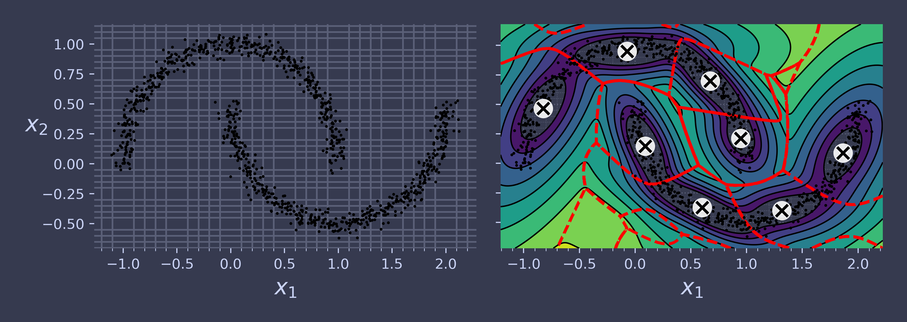
As you can see, there is an elbow at \(k=4\), meaning less clusters would be bad, and more clusters would not help much and might cut clusters in half.
So \(k=4\) is a pretty good choice. Of course in this example it is not perfect since it means that the two blobs in the lower left will be considered as just a single luster, but it's a pretty good clustering nonetheless.
plot_decision_boundaries(kmeans_per_k[4 - 1], X) cp.store_fig("inertia-vs-k-2-plot", filepath = SAVE_PATH, style = style, close = True)
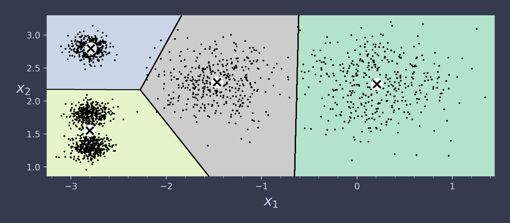
It would be better to see if there is an alternative method for estimating a good cluster number. An alternative method is called silhouette score, the mean silhouette coefficient over all instances.
An instance's silhouette coefficient is calculated to be:
\begin{equation*} s(i) = \frac{b(i) - a(i)}{\text{max} \{ a(i),\,b(i) \}} \end{equation*}where \(a(i)\) is the mean distance to the other instances in the same cluster, and \(b(i)\) is the mean nearest-cluster distance, that is the mean distance to the instances of the next closest cluster (defined as the one that minimizes b, excluding the instance's own cluster).
The silhouette coefficient can vary between -1 to +1. Coefficient value of close to +1 means that the instance is well inside its own cluster and far from other clusters, while a coefficient close to 0 means that it is close to a cluster boundary, and finally a coefficient close to -1 means that the instance may have been assigned to the wrong cluster.
Let's plot the silhouette score as a function of \(k\):
from sklearn.metrics import silhouette_score silhouette_score(X, kmeans.labels_)
0.6353422668284152
The cluster value of the current \(k\) value is around 0.65, but what about the other values ?
silhouette_scores = [silhouette_score(X, model.labels_) for model in kmeans_per_k[1:]] plt.figure(figsize=(8, 3)) plt.plot(range(2, 10), silhouette_scores, "o-") plt.xlabel("$k$") plt.ylabel("Silhouette score") plt.axis([1.8, 8.5, 0.55, 0.7]) cp.store_fig("silhouette-score-vs-k-plot", filepath = SAVE_PATH, style = style, close = True)
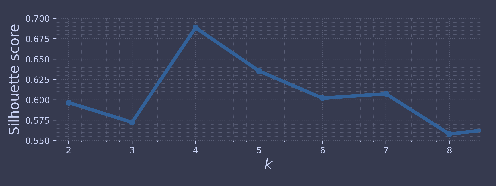
This visual shows a bit more information compared to inertia as it confirms \(k\) = 4 is a good choice for clustering. It also shows \(k\) = 5 as a respectable choice as well. But let's look at another visual view and plot a silhouette plot. The silhouette plot displays a measure of how close each point in one cluster is to points in the neighboring clusters and thus provides a way to assess parameters like number of clusters visually.
from sklearn.metrics import silhouette_samples from matplotlib.ticker import FixedLocator, FixedFormatter plt.figure(figsize=(11, 9)) for k in (3, 4, 5, 6): plt.subplot(2, 2, k - 2) y_pred = kmeans_per_k[k - 1].labels_ silhouette_coefficients = silhouette_samples(X, y_pred) padding = len(X) // 30 pos = padding ticks = [] for i in range(k): coeffs = silhouette_coefficients[y_pred == i] coeffs.sort() color = plt.cm.Spectral(i / k) plt.fill_betweenx(np.arange(pos, pos + len(coeffs)), 0, coeffs, facecolor=color, edgecolor=color, alpha=0.7) ticks.append(pos + len(coeffs) // 2) pos += len(coeffs) + padding plt.gca().yaxis.set_major_locator(FixedLocator(ticks)) plt.gca().yaxis.set_major_formatter(FixedFormatter(range(k))) if k in (3, 5): plt.ylabel("Cluster") if k in (5, 6): plt.gca().set_xticks([-0.1, 0, 0.2, 0.4, 0.6, 0.8, 1]) plt.xlabel("Silhouette Coefficient") else: plt.tick_params(labelbottom=False) plt.axvline(x=silhouette_scores[k - 2], color="red", linestyle="--") plt.title(f"$k={k}$") cp.store_fig("silhouette-analysis-plot", filepath = SAVE_PATH, style = style, close = True)
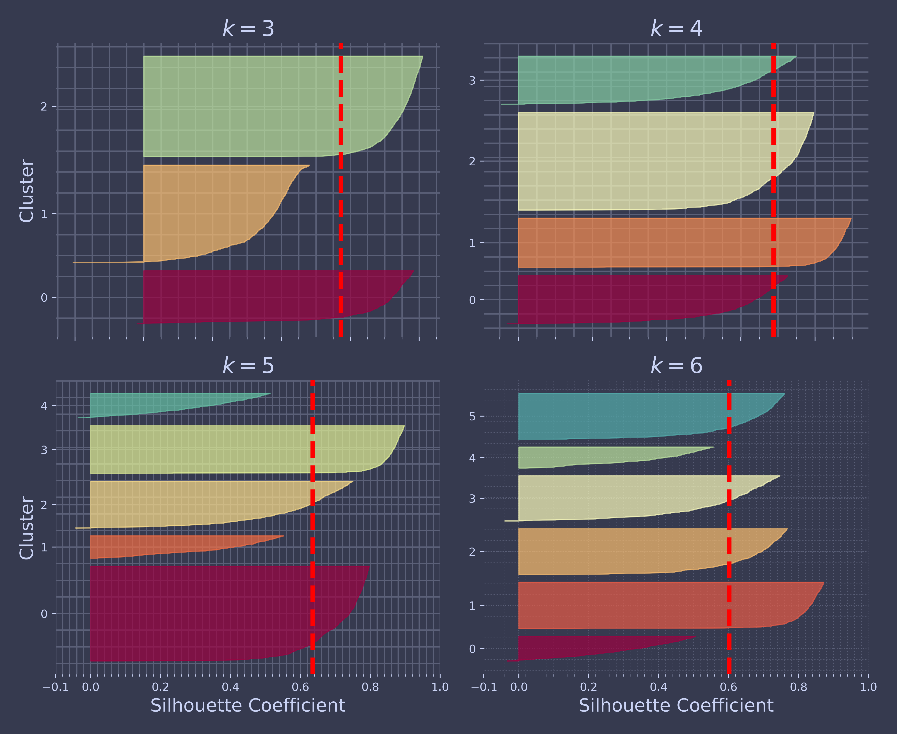
As can be seen, \(k=5\) looks to be the best option here, as all clusters are roughly the same size, and they all cross the dashed line, which represents the mean silhouette score.
Limits of K-Means
We have seen how good K-means is but it is not perfect, if the data is too elongated or spread it may not detect them well.
Let's load some data to show it.
X1, y1 = make_blobs(n_samples=1000, centers=((4, -4), (0, 0)), random_state=42) X1 = X1.dot(np.array([[0.374, 0.95], [0.732, 0.598]])) X2, y2 = make_blobs(n_samples=250, centers=1, random_state=42) X2 = X2 + [6, -8] X = np.r_[X1, X2] y = np.r_[y1, y2] kmeans_good = KMeans(n_clusters=3, init=np.array([[-1.5, 2.5], [0.5, 0], [4, 0]]), n_init=1, random_state=42) kmeans_bad = KMeans(n_clusters=3, n_init=10, random_state=42) kmeans_good.fit(X) kmeans_bad.fit(X)
And plot this data.
plt.figure(figsize=(10, 3.2)) plt.subplot(121) plot_decision_boundaries(kmeans_good, X) plt.title(f"Inertia = {kmeans_good.inertia_:.1f}") plt.subplot(122) plot_decision_boundaries(kmeans_bad, X, show_ylabels=False) plt.title(f"Inertia = {kmeans_bad.inertia_:.1f}") cp.store_fig("bad-kmeans-plot", filepath = SAVE_PATH, style = style, close = True)
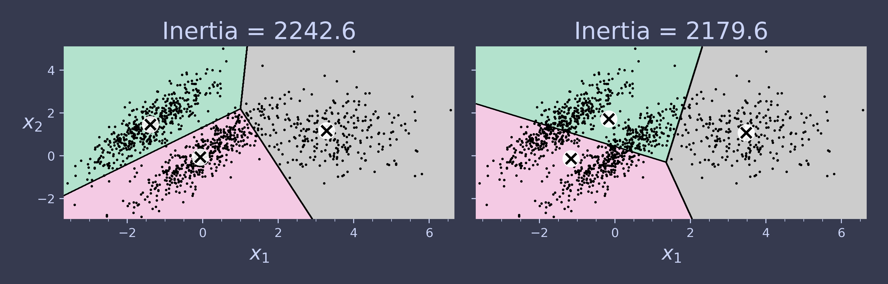
As can be seen, the k-means is not the choices for this kind of data.
Using Clustering in Image Segmentation
First download the data from the internet.
import urllib.request from pathlib import Path # to work with paths homl3_root = "https://github.com/ageron/handson-ml3/raw/main/" filename = "ladybug.png" filepath = Path("datasets/ladybug.png") if not filepath.is_file(): print("Downloading", filename) url = f"{homl3_root}/images/unsupervised_learning/{filename}" urllib.request.urlretrieve(url, filepath)
Start by loading the PIL and the image.
import PIL image = np.asarray(PIL.Image.open(filepath)) print(image.shape)
(533, 800, 3)
The image is a 3D array with each dimension representing the three primary colour (R, G, B).
Now reshape the array and use k-means clustering for categorising the pixels.
X = image.reshape(-1, 3) kmeans = KMeans(n_clusters=8, n_init=10, random_state=42).fit(X) segmented_img = kmeans.cluster_centers_[kmeans.labels_] segmented_img = segmented_img.reshape(image.shape) segmented_imgs = [] n_colors = (10, 8, 6, 4, 2) for n_clusters in n_colors: kmeans = KMeans(n_clusters=n_clusters, n_init=10, random_state=42).fit(X) segmented_img = kmeans.cluster_centers_[kmeans.labels_] segmented_imgs.append(segmented_img.reshape(image.shape))
Let's see how the images look.
plt.figure(figsize=(10, 5)) plt.subplots_adjust(wspace=0.05, hspace=0.1) plt.subplot(2, 3, 1) plt.imshow(image) plt.title("Original image") plt.axis('off') for idx, n_clusters in enumerate(n_colors): plt.subplot(2, 3, 2 + idx) plt.imshow(segmented_imgs[idx] / 255) plt.title(f"{n_clusters} colors") plt.axis('off') cp.store_fig("image-segmentation-plot", filepath = SAVE_PATH, style = style, close = True)
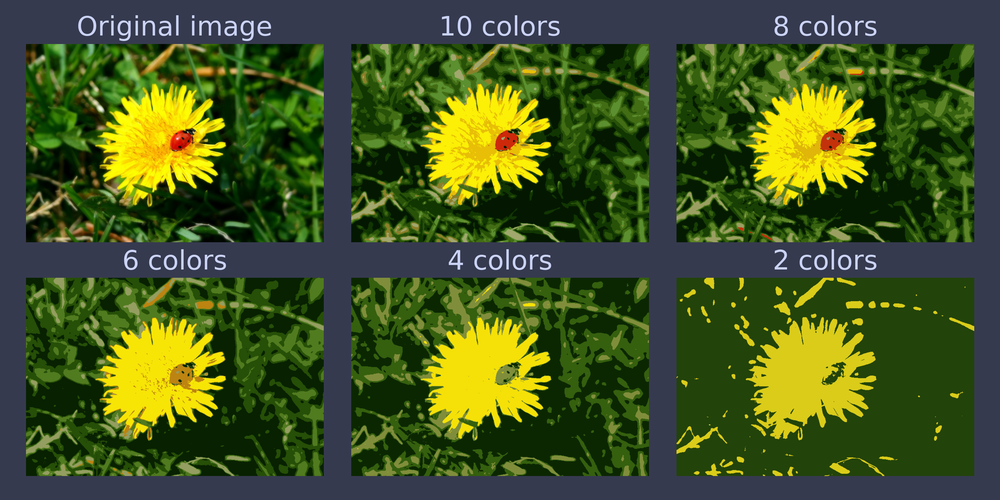
This is another application of clustering where we can turn an image to a selective set of colours.
Using Clustering for Semi-Supervised Learning
Another use case for clustering is semi-supervised learning, when we have plenty of unlabeled instances and very few labeled instances.
Let's tackle the digits dataset which is a simple MNIST-like dataset containing 1,797 grey-scale 8-by-8 images representing digits 0 to 9.
from sklearn.datasets import load_digits X_digits, y_digits = load_digits(return_X_y=True) X_train, y_train = X_digits[:1400], y_digits[:1400] X_test, y_test = X_digits[1400:], y_digits[1400:]
Let's look at the performance of a logistic regression model when we only have 50 labeled instances:
from sklearn.linear_model import LogisticRegression n_labeled = 50 log_reg = LogisticRegression(max_iter=10_000) log_reg.fit(X_train[:n_labeled], y_train[:n_labeled])
LogisticRegression(max_iter=10000)
We can see the performance (i.e., accuracy of the model on the test set)
NOTE: The test must be labelled.
log_reg.score(X_test, y_test)
0.7581863979848866
Not good. What is we had the model train on the full data set?
log_reg_full = LogisticRegression(max_iter=10_000) log_reg_full.fit(X_train, y_train) log_reg_full.score(X_test, y_test)
0.9093198992443325
Hmm. Still not the best. Let's see if we can do it better. Start by setting the training set into 50 clusters. Then for each cluster, find an image closest to the centroid. We’ll call these images the representative images:
k = 50 kmeans = KMeans(n_clusters=k, n_init=10, random_state=42) X_digits_dist = kmeans.fit_transform(X_train) representative_digit_idx = X_digits_dist.argmin(axis=0) X_representative_digits = X_train[representative_digit_idx]
plt.figure(figsize=(8, 2)) for index, X_representative_digit in enumerate(X_representative_digits): plt.subplot(k // 10, 10, index + 1) plt.imshow(X_representative_digit.reshape(8, 8), cmap="binary", interpolation="bilinear") plt.axis('off') cp.store_fig("representative-images-plot", filepath = SAVE_PATH, style = style, close = True)
y_representative_digits = np.array([ 8, 4, 9, 6, 7, 5, 3, 0, 1, 2, 3, 3, 4, 7, 2, 1, 5, 1, 6, 4, 5, 6, 5, 7, 3, 1, 0, 8, 4, 7, 1, 1, 8, 2, 9, 9, 5, 9, 7, 4, 4, 9, 7, 8, 2, 6, 6, 3, 2, 8 ])
We now have a dataset with just 50 labeled, but instead of being completely random instances, each of them is a representative image of its cluster. Let's see if the performance is any better:
log_reg = LogisticRegression(max_iter=10_000) log_reg.fit(X_representative_digits, y_representative_digits) log_reg.score(X_test, y_test)
0.8387909319899244
Our result jumped from 74 to 83 accuracy and this is only by training on 50 labelled instances. Since it's often costly and painful to label instances, especially when it has to be done manually by experts, it's a good idea to make them label representative instances rather than just random instances.
Let's see if we can improve this further. Let's try to propagate the labels to all the other instances in the same cluster
y_train_propagated = np.empty(len(X_train), dtype=np.int64) for i in range(k): y_train_propagated[kmeans.labels_ == i] = y_representative_digits[i]
log_reg = LogisticRegression(max_iter=10_000) log_reg.fit(X_train, y_train_propagated)
LogisticRegression(max_iter=10000)
Let's see our score.
log_reg.score(X_test, y_test)
0.8589420654911839
Our result is a bit better.
DBSCAN
The density-based spatial clustering of applications with noise (DBSCAN) algorithm defines clusters as continuous regions of high density. The DBSCAN class in Scikit-Learn is as simple to use as you might expect. Let’s test it on the moons dataset:
from sklearn.cluster import DBSCAN from sklearn.datasets import make_moons X, y = make_moons(n_samples=1000, noise=0.05, random_state=42) dbscan = DBSCAN(eps=0.05, min_samples=5) dbscan.fit(X)
DBSCAN(eps=0.05)
The labels of all the instances are now available in the labels_ instance variable:
print(dbscan.labels_[:10])
[ 0 2 -1 -1 1 0 0 0 2 5]
Some instances have a cluster index equal to –1, which means that they are considered as anomalies by the algorithm. The indices of the core instances are available in the core_sample_indices_ instance variable, and the core instances themselves are available in the components_ instance variable:
print(dbscan.core_sample_indices_[:10])
[ 0 4 5 6 7 8 10 11 12 13]
print(dbscan.components_)
[[-0.02137124 0.40618608] [-0.84192557 0.53058695] [ 0.58930337 -0.32137599] ... [ 1.66258462 -0.3079193 ] [-0.94355873 0.3278936 ] [ 0.79419406 0.60777171]]
Let's see how this clustering looks.
def plot_dbscan(dbscan, X, size, show_xlabels=True, show_ylabels=True): core_mask = np.zeros_like(dbscan.labels_, dtype=bool) core_mask[dbscan.core_sample_indices_] = True anomalies_mask = dbscan.labels_ == -1 non_core_mask = ~(core_mask | anomalies_mask) cores = dbscan.components_ anomalies = X[anomalies_mask] non_cores = X[non_core_mask] plt.scatter(cores[:, 0], cores[:, 1], c=dbscan.labels_[core_mask], marker='o', s=size, cmap="Paired") plt.scatter(cores[:, 0], cores[:, 1], marker='*', s=20, c=dbscan.labels_[core_mask]) plt.scatter(anomalies[:, 0], anomalies[:, 1], c="r", marker="x", s=100) plt.scatter(non_cores[:, 0], non_cores[:, 1], c=dbscan.labels_[non_core_mask], marker=".") if show_xlabels: plt.xlabel("$x_1$") else: plt.tick_params(labelbottom=False) if show_ylabels: plt.ylabel("$x_2$", rotation=0) else: plt.tick_params(labelleft=False) plt.title(f"eps={dbscan.eps:.2f}, min_samples={dbscan.min_samples}") plt.grid() plt.gca().set_axisbelow(True) dbscan2 = DBSCAN(eps=0.2) dbscan2.fit(X) plt.figure(figsize=(10, 4)) plt.subplot(121) plot_dbscan(dbscan, X, size=100) plt.subplot(122) plot_dbscan(dbscan2, X, size=600, show_ylabels=False) cp.store_fig("dbscan-plot", filepath = SAVE_PATH, style = style, close = True)
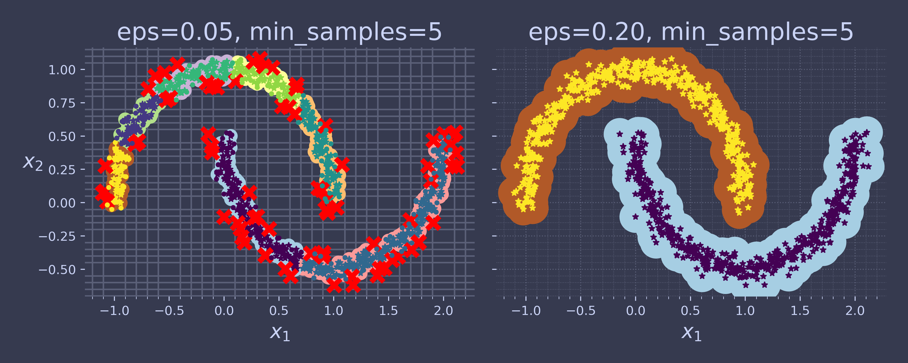
It identified quite a lot of anomalies, plus seven different clusters. If we widen each instance’s neighborhood by increasing eps to 0.2, we get the clustering on the right, which looks perfect.
As the right is better, lets use dbscan2 as default value.
dbscan = dbscan2 # extra code – the text says we now use eps=0.2
As it currently stands DBSCAN class can't predict which cluster a new instance can belong to. To allow this feature new insertion of instances lets train a KNeighborsClassifier.
from sklearn.neighbors import KNeighborsClassifier knn = KNeighborsClassifier(n_neighbors=50) knn.fit(dbscan.components_, dbscan.labels_[dbscan.core_sample_indices_])
KNeighborsClassifier(n_neighbors=50)
Let's give it some instances and see which instances they belong to.
X_new = np.array([[-0.5, 0], [0, 0.5], [1, -0.1], [2, 1]]) print(knn.predict(X_new))
[6 0 3 2]
We can see the probability estimation for each cluster.
print(knn.predict_proba(X_new))
[[0.24 0. 0. 0. 0. 0. 0.76] [1. 0. 0. 0. 0. 0. 0. ] [0. 0. 0.3 0.7 0. 0. 0. ] [0. 0. 1. 0. 0. 0. 0. ]]
plt.figure(figsize=(10, 6)) plot_decision_boundaries(knn, X, show_centroids=False) plt.scatter(X_new[:, 0], X_new[:, 1], c="b", marker="+", s=200, zorder=10) cp.store_fig("cluster-classification-plot", filepath = SAVE_PATH, style = style, close = True)
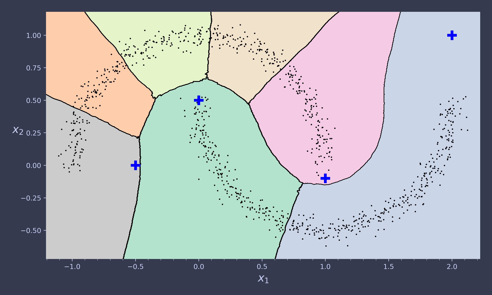
y_dist, y_pred_idx = knn.kneighbors(X_new, n_neighbors=1) y_pred = dbscan.labels_[dbscan.core_sample_indices_][y_pred_idx] y_pred[y_dist > 0.2] = -1 print(y_pred.ravel())
[-1 0 1 -1]
Other Clustering Algorithms
These are additional clustering methods which you may encounter.
Spectral Clustering
Spectral Clustering is a variant of the clustering algorithm that uses the connectivity between the data points to form the clustering. It uses eigenvalues and eigenvectors of the data matrix to forecast the data into lower dimensions space to cluster the data points. It is based on the idea of a graph representation of data where the data point are represented as nodes and the similarity between the data points are represented by an edge.
from sklearn.cluster import SpectralClustering
sc1 = SpectralClustering(n_clusters=2, gamma=100, random_state=42) sc1.fit(X)
SpectralClustering(gamma=100, n_clusters=2, random_state=42)
print(sc1.affinity_matrix_.round(2))
[[1. 0. 0. ... 0. 0. 0. ] [0. 1. 0.3 ... 0. 0. 0. ] [0. 0.3 1. ... 0. 0. 0. ] ... [0. 0. 0. ... 1. 0. 0. ] [0. 0. 0. ... 0. 1. 0. ] [0. 0. 0. ... 0. 0. 1. ]]
sc2 = SpectralClustering(n_clusters=2, gamma=1, random_state=42) sc2.fit(X)
SpectralClustering(gamma=1, n_clusters=2, random_state=42)
def plot_spectral_clustering(sc, X, size, alpha, show_xlabels=True, show_ylabels=True): plt.scatter(X[:, 0], X[:, 1], marker='o', s=size, c='gray', alpha=alpha) plt.scatter(X[:, 0], X[:, 1], marker='o', s=30, c='w') plt.scatter(X[:, 0], X[:, 1], marker='.', s=10, c=sc.labels_, cmap="Paired") if show_xlabels: plt.xlabel("$x_1$") else: plt.tick_params(labelbottom=False) if show_ylabels: plt.ylabel("$x_2$", rotation=0) else: plt.tick_params(labelleft=False) plt.title(f"RBF gamma={sc.gamma}")
plt.figure(figsize=(9, 3.2)) plt.subplot(121) plot_spectral_clustering(sc1, X, size=500, alpha=0.1) plt.subplot(122) plot_spectral_clustering(sc2, X, size=4000, alpha=0.01, show_ylabels=False) cp.store_fig("spectral-cluster-plot", filepath = SAVE_PATH, style = style, close = True)
Agglomerate Clustering
from sklearn.cluster import AgglomerativeClustering
X = np.array([0, 2, 5, 8.5]).reshape(-1, 1) agg = AgglomerativeClustering(linkage="complete").fit(X)
def learned_parameters(estimator): return [attrib for attrib in dir(estimator) if attrib.endswith("_") and not attrib.startswith("_")]
print(learned_parameters(agg))
print(agg.children_)
Gaussian Mixtures
A Gaussian mixture model (GMM) is a probabilistic model that assumes that the instances were generated from a mixture of several Gaussian distributions whose parameters are unknown.
Let's generate the same dataset as earlier with three ellipsoids (the one K-Means had trouble with):
X1, y1 = make_blobs(n_samples=1000, centers=((4, -4), (0, 0)), random_state=42) X1 = X1.dot(np.array([[0.374, 0.95], [0.732, 0.598]])) X2, y2 = make_blobs(n_samples=250, centers=1, random_state=42) X2 = X2 + [6, -8] X = np.r_[X1, X2] y = np.r_[y1, y2]
Let's train a Gaussian mixture model on the previous dataset:
from sklearn.mixture import GaussianMixture
given the dataset \(\vec{X}\), you typically want to start by estimating the weights \(\phi\) and all the distribution parameters μ(1) to μ(k) and Σ(1) to Σ(k). For this we use GaussianMixture.
gm = GaussianMixture(n_components=3, n_init=10, random_state=42) gm.fit(X)
GaussianMixture(n_components=3, n_init=10, random_state=42)
Let's look at the parameters the algorithm estimated:
print(gm.weights_)
[0.40005972 0.20961444 0.39032584]
print(gm.means_)
[[-1.40764129 1.42712848] [ 3.39947665 1.05931088] [ 0.05145113 0.07534576]]
print(gm.covariances_)
[[[ 0.63478217 0.72970097] [ 0.72970097 1.16094925]] [[ 1.14740131 -0.03271106] [-0.03271106 0.95498333]] [[ 0.68825143 0.79617956] [ 0.79617956 1.21242183]]]
Let's check if the algorithm has converged.
print(gm.converged_)
True
But how many iterations did it take ?
print(gm.n_iter_)
4
You can now use the model to predict which cluster each instance belongs to (hard clustering) or the probabilities that it came from each cluster.
For this, just use predict() method or the predictproba() method:
print(gm.predict(X))
[2 2 0 ... 1 1 1]
print(gm.predict_proba(X).round(3))
[[0. 0.023 0.977] [0.001 0.016 0.983] [1. 0. 0. ] ... [0. 1. 0. ] [0. 1. 0. ] [0. 1. 0. ]]
This is a generative model, so you can sample new instances from it (and get their labels):
X_new, y_new = gm.sample(6) print(X_new)
[[-2.32491052 1.04752548] [-1.16654983 1.62795173] [ 1.84860618 2.07374016] [ 3.98304484 1.49869936] [ 3.8163406 0.53038367] [ 0.38079484 -0.56239369]]
print(y_new)
[0 0 1 1 1 2]
Notice that they are sampled sequentially from each cluster.
You can also estimate the log of the probability density function (PDF) at any location using the scoresamples() method:
print(gm.score_samples(X).round(2))
[-2.61 -3.57 -3.33 ... -3.51 -4.4 -3.81]
Let's check that the PDF integrates to 1 over the whole space. We just take a large square around the clusters, and chop it into a grid of tiny squares, then we compute the approximate probability that the instances will be generated in each tiny square (by multiplying the PDF at one corner of the tiny square by the area of the square), and finally summing all these probabilities).
The result is very close to 1:
resolution = 100 grid = np.arange(-10, 10, 1 / resolution) xx, yy = np.meshgrid(grid, grid) X_full = np.vstack([xx.ravel(), yy.ravel()]).T pdf = np.exp(gm.score_samples(X_full)) pdf_probas = pdf * (1 / resolution) ** 2 print(pdf_probas.sum())
0.9999999999225088
Now let's plot the resulting decision boundaries (dashed lines) and density contours:
from matplotlib.colors import LogNorm def plot_gaussian_mixture(clusterer, X, resolution=1000, show_ylabels=True): mins = X.min(axis=0) - 0.1 maxs = X.max(axis=0) + 0.1 xx, yy = np.meshgrid(np.linspace(mins[0], maxs[0], resolution), np.linspace(mins[1], maxs[1], resolution)) Z = -clusterer.score_samples(np.c_[xx.ravel(), yy.ravel()]) Z = Z.reshape(xx.shape) plt.contourf(xx, yy, Z, norm=LogNorm(vmin=1.0, vmax=30.0), levels=np.logspace(0, 2, 12)) plt.contour(xx, yy, Z, norm=LogNorm(vmin=1.0, vmax=30.0), levels=np.logspace(0, 2, 12), linewidths=1, colors='k') Z = clusterer.predict(np.c_[xx.ravel(), yy.ravel()]) Z = Z.reshape(xx.shape) plt.contour(xx, yy, Z, linewidths=2, colors='r', linestyles='dashed') plt.plot(X[:, 0], X[:, 1], 'k.', markersize=2) plot_centroids(clusterer.means_, clusterer.weights_) plt.xlabel("$x_1$") if show_ylabels: plt.ylabel("$x_2$", rotation=0) else: plt.tick_params(labelleft=False) plt.figure(figsize=(8, 4)) plot_gaussian_mixture(gm, X) cp.store_fig("gaussian-mixture-plot", filepath = SAVE_PATH, style = style, close = True)
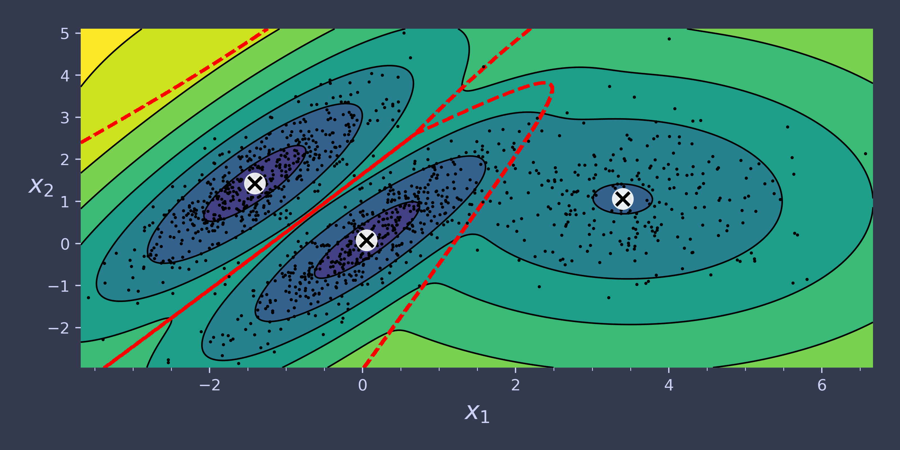
You can impose constraints on the covariance matrices that the algorithm looks for by setting the covariancetype hyperparameter:
"spherical": all clusters must be spherical, but they can have different diameters (i.e., different variances). "diag": clusters can take on any ellipsoidal shape of any size, but the ellipsoid's axes must be parallel to the axes (i.e., the covariance matrices must be diagonal). "tied": all clusters must have the same shape, which can be any ellipsoid (i.e., they all share the same covariance matrix). "full" (default): no constraint, all clusters can take on any ellipsoidal shape of any size.
gm_full = GaussianMixture(n_components=3, n_init=10, covariance_type="full", random_state=42) gm_tied = GaussianMixture(n_components=3, n_init=10, covariance_type="tied", random_state=42) gm_spherical = GaussianMixture(n_components=3, n_init=10, covariance_type="spherical", random_state=42) gm_diag = GaussianMixture(n_components=3, n_init=10, covariance_type="diag", random_state=42) gm_full.fit(X) gm_tied.fit(X) gm_spherical.fit(X) gm_diag.fit(X) def compare_gaussian_mixtures(gm1, gm2, X): plt.figure(figsize=(9, 4)) plt.subplot(121) plot_gaussian_mixture(gm1, X) plt.title(f'covariance_type="{gm1.covariance_type}"') plt.subplot(122) plot_gaussian_mixture(gm2, X, show_ylabels=False) plt.title(f'covariance_type="{gm2.covariance_type}"') compare_gaussian_mixtures(gm_tied, gm_spherical, X) cp.store_fig("covariance-type-plot", filepath = SAVE_PATH, style = style, close = True)
compare_gaussian_mixtures(gm_full, gm_diag, X) cp.store_fig("covariance-type-2-plot", filepath = SAVE_PATH, style = style, close = True)
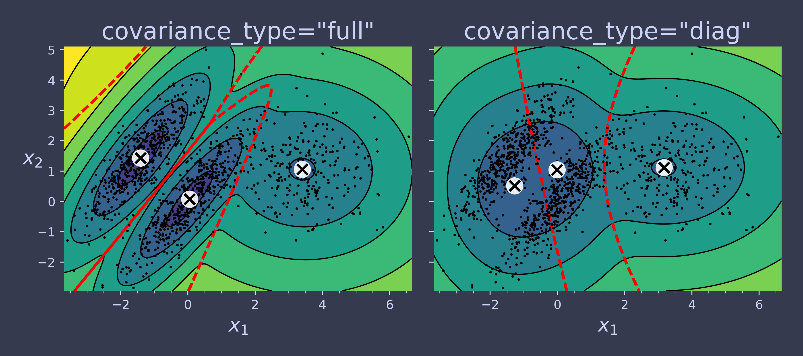
Anomaly Detection Using Gaussian Mixtures
Gaussian Mixtures can be used for anomaly detection: instances located in low-density regions can be considered anomalies. You must define what density threshold you want to use. For example, in a manufacturing company that tries to detect defective products, the ratio of defective products is usually well-known. Say it is equal to 2%, then you can set the density threshold to be the value that results in having 2% of the instances located in areas below that threshold density:
densities = gm.score_samples(X) density_threshold = np.percentile(densities, 2) anomalies = X[densities < density_threshold]
plt.figure(figsize=(8, 4)) plot_gaussian_mixture(gm, X) plt.scatter(anomalies[:, 0], anomalies[:, 1], color='r', marker='*') plt.ylim(top=5.1) cp.store_fig("mixture-anomaly-detection-plot", filepath = SAVE_PATH, style = style, close = True)
from scipy.stats import norm x_val = 2.5 std_val = 1.3 x_range = [-6, 4] x_proba_range = [-2, 2] stds_range = [1, 2] xs = np.linspace(x_range[0], x_range[1], 501) stds = np.linspace(stds_range[0], stds_range[1], 501) Xs, Stds = np.meshgrid(xs, stds) Z = 2 * norm.pdf(Xs - 1.0, 0, Stds) + norm.pdf(Xs + 4.0, 0, Stds) Z = Z / Z.sum(axis=1)[:, np.newaxis] / (xs[1] - xs[0]) x_example_idx = (xs >= x_val).argmax() # index of the first value >= x_val max_idx = Z[:, x_example_idx].argmax() max_val = Z[:, x_example_idx].max() s_example_idx = (stds >= std_val).argmax() x_range_min_idx = (xs >= x_proba_range[0]).argmax() x_range_max_idx = (xs >= x_proba_range[1]).argmax() log_max_idx = np.log(Z[:, x_example_idx]).argmax() log_max_val = np.log(Z[:, x_example_idx]).max() plt.figure(figsize=(16, 8)) plt.subplot(2, 2, 1) plt.contourf(Xs, Stds, Z, cmap="GnBu") plt.plot([-6, 4], [std_val, std_val], "k-", linewidth=2) plt.plot([x_val, x_val], [1, 2], "b-", linewidth=2) plt.ylabel(r"$\theta$", rotation=0, labelpad=10) plt.title(r"Model $f(x; \theta)$") plt.subplot(2, 2, 2) plt.plot(stds, Z[:, x_example_idx], "b-") plt.plot(stds[max_idx], max_val, "r.") plt.plot([stds[max_idx], stds[max_idx]], [0, max_val], "r:") plt.plot([0, stds[max_idx]], [max_val, max_val], "r:") plt.text(stds[max_idx]+ 0.01, 0.081, r"$\hat{\theta}$") plt.text(stds[max_idx]+ 0.01, max_val - 0.006, r"$Max$") plt.text(1.01, max_val - 0.008, r"$\hat{\mathcal{L}}$") plt.ylabel(r"$\mathcal{L}$", rotation=0, labelpad=10) plt.title(fr"$\mathcal{{L}}(\theta|x={x_val}) = f(x={x_val}; \theta)$") plt.grid() plt.axis([1, 2, 0.08, 0.12]) plt.subplot(2, 2, 3) plt.plot(xs, Z[s_example_idx], "k-") plt.fill_between(xs[x_range_min_idx:x_range_max_idx+1], Z[s_example_idx, x_range_min_idx:x_range_max_idx+1], alpha=0.2) plt.xlabel(r"$x$") plt.ylabel("PDF") plt.title(fr"PDF $f(x; \theta={std_val})$") plt.grid() plt.axis([-6, 4, 0, 0.25]) plt.subplot(2, 2, 4) plt.plot(stds, np.log(Z[:, x_example_idx]), "b-") plt.plot(stds[log_max_idx], log_max_val, "r.") plt.plot([stds[log_max_idx], stds[log_max_idx]], [-5, log_max_val], "r:") plt.plot([0, stds[log_max_idx]], [log_max_val, log_max_val], "r:") plt.text(stds[log_max_idx]+ 0.01, log_max_val - 0.06, r"$Max$") plt.text(stds[log_max_idx]+ 0.01, -2.49, r"$\hat{\theta}$") plt.text(1.01, log_max_val - 0.08, r"$\log \, \hat{\mathcal{L}}$") plt.xlabel(r"$\theta$") plt.ylabel(r"$\log\mathcal{L}$", rotation=0, labelpad=10) plt.title(fr"$\log \, \mathcal{{L}}(\theta|x={x_val})$") plt.grid() plt.axis([1, 2, -2.5, -2.1]) cp.store_fig("likelihood-function-plot", filepath = SAVE_PATH, style = style, close = True)
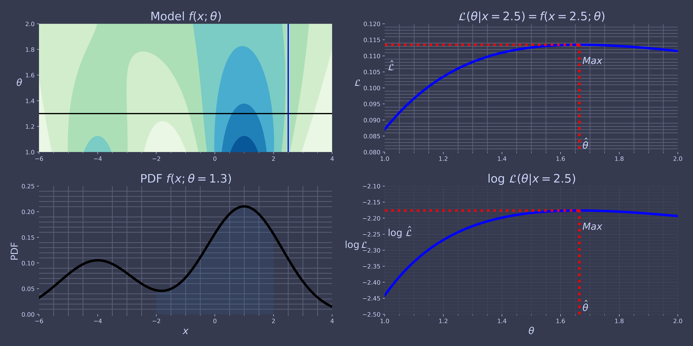
print(gm.bic(X))
print(gm.aic(X))
n_clusters = 3 n_dims = 2 n_params_for_weights = n_clusters - 1 n_params_for_means = n_clusters * n_dims n_params_for_covariance = n_clusters * n_dims * (n_dims + 1) // 2 n_params = n_params_for_weights + n_params_for_means + n_params_for_covariance max_log_likelihood = gm.score(X) * len(X) # log(L^) bic = np.log(len(X)) * n_params - 2 * max_log_likelihood aic = 2 * n_params - 2 * max_log_likelihood print(f"bic = {bic}") print(f"aic = {aic}") print(f"n_params = {n_params}")
gms_per_k = [GaussianMixture(n_components=k, n_init=10, random_state=42).fit(X) for k in range(1, 11)] bics = [model.bic(X) for model in gms_per_k] aics = [model.aic(X) for model in gms_per_k] plt.figure(figsize=(8, 3)) plt.plot(range(1, 11), bics, "o-", label="BIC") plt.plot(range(1, 11), aics, "o--", label="AIC") plt.xlabel("$k$") plt.ylabel("Information Criterion") plt.axis([1, 9.5, min(aics) - 50, max(aics) + 50]) plt.annotate("", xy=(3, bics[2]), xytext=(3.4, 8650), arrowprops=dict(facecolor='black', shrink=0.1)) plt.text(3.5, 8660, "Minimum", horizontalalignment="center") plt.legend() cp.store_fig("aic-bic-vs-k-plot", filepath = SAVE_PATH, style = style, close = True)
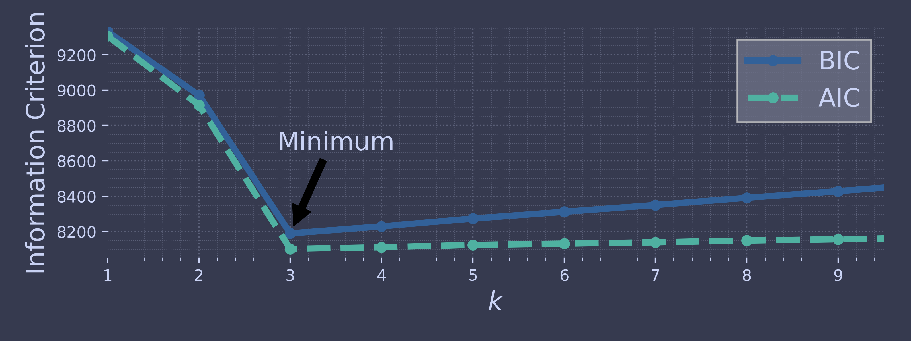
Bayesian Gaussian Mixture Models
Rather than manually searching for the optimal number of clusters, it is possible to use instead the BayesianGaussianMixture class which is capable of giving weights equal (or close) to zero to unnecessary clusters.
Just set the number of components to a value that you believe is greater than the optimal number of clusters, and the algorithm will eliminate the unnecessary clusters automatically.
from sklearn.mixture import BayesianGaussianMixture bgm = BayesianGaussianMixture(n_components=10, n_init=10, random_state=42) bgm.fit(X) bgm.weights_.round(2)
The algorithm automatically detected that only 3 components are needed!
plt.figure(figsize=(8, 5)) plot_gaussian_mixture(bgm, X) cp.store_fig("aic-bic-vs-k-2-plot", filepath = SAVE_PATH, style = style, close = True)
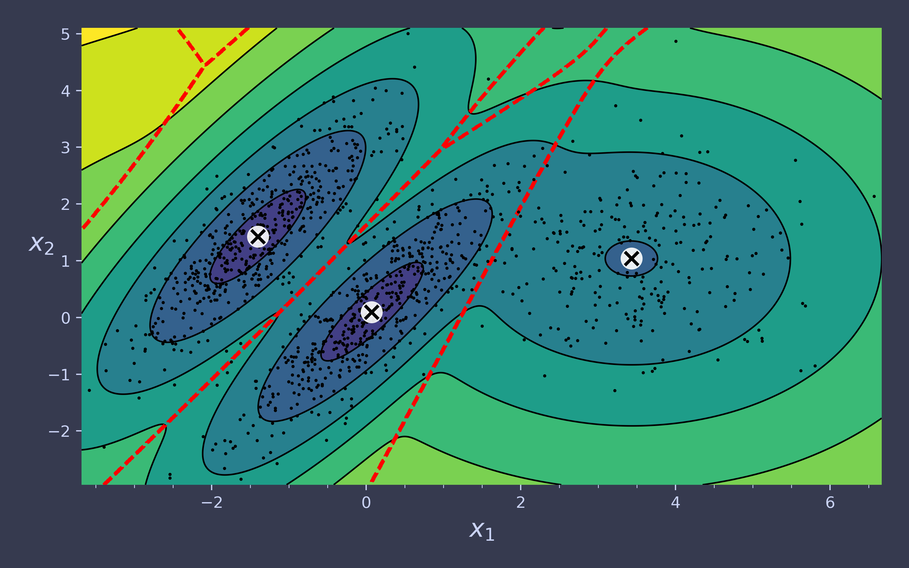
X_moons, y_moons = make_moons(n_samples=1000, noise=0.05, random_state=42) bgm = BayesianGaussianMixture(n_components=10, n_init=10, random_state=42) bgm.fit(X_moons) plt.figure(figsize=(9, 3.2)) plt.subplot(121) plot_data(X_moons) plt.xlabel("$x_1$") plt.ylabel("$x_2$", rotation=0) plt.grid() plt.subplot(122) plot_gaussian_mixture(bgm, X_moons, show_ylabels=False) cp.store_fig("moons-vs-bgm-plot", filepath = SAVE_PATH, style = style, close = True)
Oops, not great… instead of detecting 2 moon-shaped clusters, the algorithm detected 8 ellipsoidal clusters. However, the density plot does not look too bad, so it might be usable for anomaly detection.